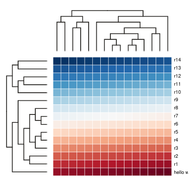

Code: An example Node and Tree class¶
A tree can be represented in a variety of ways. Its representation can be visual, as we have seen already in drawings/plots of trees generated with graphical tools. But trees can also be represented as a data structure -- an object for storing information -- which is a widely used .. for trees. This is where computing comes in. How can we create a tree data structure, what does that even mean? Let's walk through it.
A goal of representing a tree as a data structure is to be able to extract information from the tree. So let's start by trying to identify what information can or must exist in a tree. Start by looking at the tree drawing below and try to identify its core features.
Example code to create simple tree figure
# generate a random 8 tip ultrametric tree
tree = toytree.rtree.unittree(ntips=8, seed=123)
# draw the tree facing downwards with index node labels shown
tree.draw(layout='d', node_labels="idx", node_sizes=18)

Example code to create a labeled tree figure
# generate a random 8 tip ultrametric tree
tree = toytree.rtree.unittree(ntips=8, seed=123)
# draw the tree facing downward
canvas, axes, mark = tree.draw(layout='d')
# add text annotations to the same coordinate axes
mark2 = axes.text(data)
# add line annotations to the same coordinate axes
mark3 = axes.text(data)
(1) Which Nodes connect to others (edges); (2) the lengths of these connections (edge lengths). This simplest form can be represented with a table, like the example below.
Table data structure¶
Storing trees as a table has potential benefits over alternative approaches.
For one, a table is very memory efficient. If you have a tree with 1 million
Nodes this could be stored in the space required for storing two columns
of 1 million integers. This fact is taken advantage of in software tools
like tskit, which is used to study collections of genealogical trees
across entire genomes, which can include millions of trees of large
size, where similarities among trees are recorded in the same table, rather
than by duplicating their records. We will cover this in chapter XX.
While tables can be efficient for storing and studying fixed trees, they are not the most efficient when the tree structure needs to be mutable, i.e., when we plan to modify the tree at various times by adding and/or removing Nodes from the tree. Depending on where the new Nodes are placed, we will need to increment the labels of each Node to update which ones are connected to which. Similarly, if we wanted to re-root the tree, or change other attributes such as the edge lengths.
Example code get an edge table from a ToyTree
# generate a random 8 tip ultrametric tree
tree = toytree.rtree.unittree(ntips=8, seed=123)
# get the tree edges as a table (DataFrame) and print
print(tree.get_edges())
# OR
canvas = toyplot.Canvas(width=800, height=400)
table = canvas.table(tree.get_edges(), bounds=("5%", "50%", "5%", "95%"))
axes = canvas.cartesian(bounds=("50%", "95%", "5%", "95%"))
tree.draw(axes=axes);
child parent
0 0 8
1 1 8
2 2 9
3 3 9
4 4 11
5 5 11
6 6 13
7 7 13
8 8 10
9 9 10
10 10 12
11 11 12
12 12 14
13 13 14
For example, say we wanted to find the names of all descendants of internal Node "F" in the tree above. Using a table this would multiple lookups in the table to ask which nodes are directly descended from "F", and then which are descended from those descendants. In Python, a table would likely be stored as an array, ndarray, or DataFrame, where such lookups are fast in absolute terms, but still slow relative to an alternative approach.
Tree data structure¶
An alternative is to store the Nodes as a Tree data structure. In general terms, this can be done in any object-oriented programming language where arbitrary class objects can be created in memory, and references among these objects can also be stored. This approach to object-oriented programming (OOP) is widely used, especially in languages like C, Java, and Python.
Doing so requires tracing the connections among nodes, from one to the next,
in a certain order. This process, termed a tree traversal, turns out to
be a very common algorithm used throughout computer science. Consequently,
the development of tree data structures have been well studied. For example,
the file system on your computer represents a tree data structure, where
folders are nested within folders nested within folders. File browsers and
other computer programs traverse the file system frequently, for example
when looking for files of a certain name or type. This process could be
accomplished by storing the names and types of all files in memory at once,
however, it is much more efficient to simply look inside each subfolder at
a time, as it is visited, during the traversal process. Moreover, if you have
some idea of where the file you are looking for is located, you can start the
search from that location and only files descended (nested within) that
location will be searched.
We will find that traversal strategies are a core concept in developing and using tree-based algorithms. This makes them not only central to certain computational methods, but also central to many algorithms used in evolutionary biology.
Coding practices¶
Because this is our coding exercise we will start slowly, describing the
steps that are taken and why. This lesson will use concepts from the
bootcamp chapter including types, type hints, and
Object oriented programming.
OOP¶
Let's develop a Tree class object. Here we will benefit from object oriented programming, and this lesson will serve to introduce some core concepts of OOP.
A tree is composed of Nodes and Edges. These could each be represented by an object in memory, however, a more common approach when working with tree or graph data structures is to simply represent Nodes in memory, and for Edges to represent the relationships among Node objects.
Node class 1¶
We will walkthrough the development of a Node class object for storing information in a tree data structure. To describe this development we will start with a very simple object and then iteratively add to it to build up to a more complex Python class.
What is a Node? A single Node of a tree can either be a terminal, internal, or root Node. A terminal node has no descendants, this is sometimes referred to its degree=1 (reference), because it has one edge in (its parent), and no edges out (no descendants). An internal Node by contrast has degree >= 2, since it has a parent in addition to one or more descendants. Finally, a root node can have degree >= 2, but it does not have a parent edge, only descendants.
Each of these can be represented by a class object that simply store other objects as its parent and children. Let's start with a simple example. Each NodeExample class object has a name and dist associated with it.
class Node1:
def __init__(self, name, dist):
# store parameters
self.name = name
self.dist = dist
# default attributes of Node objects
self.children = ()
self.up = None
This class is very simple, and so not yet very useful. But already we can
begin to create a tree data structure simply by creating connections among
Node objects. Below we create three Node instances with different names,
and then edit the .children or .up attributes to create references
(pointers) from one to another, such that the node named "A" is parent to
Nodes "B" and "C".
# create several Node objects
node_a = Node1(name="A", dist=1.0)
node_b = Node1(name="B", dist=1.0)
node_c = Node1(name="C", dist=1.0)
# connect them to setting their children and/or up attributes
node_a.children = (node_b, node_c)
node_b.up = node_a
node_c.up = node_a
There is now information not only within each class instance, but there is also information we can extract about the relationships among them. Below this is done within a for-loop visiting each node to print some information from its attributes:
# now each Node has data (information about itself and its connections)
for node in (node1, node2, node3):
children_names = [i.name for i in node.children]
parent_name = node.up.name if node.up else "None"
print(f"{node.name}, children={children_names}", up={parent_name})
A, children=[B, C], up=None
B, children=[], up=A
C, children=[], up=A
Node class 2¶
Now let's make a more proper version this class. This should include a well
formatted docstring, and type hints for all parameters and attributes of the
class. Here we import an interesting new extension called annotations which
allows us to reference the new class we are defining as a type hint for
itself (i.e., the Node class children are also Node class objects).
from __future__ import annotations
from typing import Tuple, Optional
class NodeBase:
"""A Node instance that can connect with other Nodes to form a Tree.
Parameters
----------
name: str
A name string associated with a Node when printed or visualized.
dist: float
A float value as the distance between this Node and its parent (up)
Attributes
----------
children: Tuple
A tuple of Node instances that are descended from this Node.
up: Node or None
A Node that is ancestral to this Node, or None if this Node is root.
"""
def __init__(self, name: str="", dist: float=0.):
self.name = str(name)
self.dist = float(dist)
self.children: Tuple[Node] = ()
self.up: Optional[Node] = None
def __repr__(self) -> str:
"""Return string representation of the Node relationship"""
children = [i.name for i in self.children]
parent = self.up.name if self.up else 'None'
return f"<Node {self.name}, up={parent}, children={children}>"
def is_leaf(self) -> bool:
"""Return True if Node is a leaf (i.e., no children)"""
return bool(self.children)
def is_root(self) -> bool:
"""Return True if Node is the root."""
return self.up is None
def add_child(self, node: Node) -> None:
"""Add a Node as a child to this one."""
node.up = self
self.children += (node,)
node_a = Node("a")
node_b = Node("b")
node_c = Node("c")
Traversal¶
A key feature of tree objects is the process of traversal, by which each
Node is visited in some determined order. Traversal algorithms make it
possible to calculate information on trees fast and efficiently, typically
by performing calculations on parts of the tree which can be used for later
calculations. Examples of this include Felsenstein's pruning algorithm,
which we will cover later, as an efficient traversal algorithm for calculating
parsimony or likelihood scores on trees (citation). Here we will first cover
a more simple example, showing how traversal provides an efficient method for
calculating the Node coordinate layout for plotting trees.
As a toy example let's extend our Node class object by creating a superclass
-- a class that inherits the properties of the Node class, but also contains
additional attributes or functions that are defined. Here we are using
the class extending only as a teaching tool, to break up the description of
this class into smaller chunks. However, we will later see examples where
...
This class will have the same __init__ as the NodeBase, meaning that it
also takes an optional name and dist values.
from typing import Generator
from collections import deque
class Node(NodeBase):
"""Tree is a superclass of Node with traversal functions.
"""
def _traverse_in_root_to_tip_order(self) -> Generator:
"""Yield all nodes in order of n descendants from root to tips."""
# start with root in queue. When queue is empty traversal is finished.
queue = deque([self])
while queue:
# return the left-most node in the queue. yield returns current
# state while allowing the func to resume (i.e., a generator).
node = queue.popleft()
yield node
# append the node's children to the right end of the queue
queue.extend(node.children)
def _traverse_in_tips_to_root_order(self) -> Generator:
"""Yield all nodes in order by visiting children before parents."""
stack1 = deque([self])
stack2 = deque()
while stack1:
# pop a node from stack1 and append to stack2
node = stack1.pop()
stack2.append(node)
# append left and right of current node to stack1
stack1.append()
if not node.is_leaf():
queue.extend()
else:
yield node
def _traverse_parents_then_children(self) -> Generator:
"""Yield all nodes in order of parents before children."""
queue = deque()
node = self
while node is not None:
# attach current node's children to front of queue
queue.extendleft(node.children[::-1])
# return the current node
yield node
# update node from left of queue
try:
node = queue.popleft()
except IndexError:
node = None
Create a simple tree¶
This is a simplified version of a function we used in the last lesson to
generate a random tree of connected Nodes in toytree, using the function
toytree.rtree.imbtree. The function below will return an imbalanced tree
by starting with a root Node and adding pairs of children iteratively to
the right descendant Node until the number of connected tip Nodes reaches
the requested number (ntips). It also extends the dist attribute of the
left child Node each iteration
def ladder_tree(ntips: int):
"""Return a ladder-like tree of Node objects."""
# create root Node and select it as current focal node
node = root = Node(name="root")
for idx in range(0, ntips, 2):
# add two children to the focal node
node.add_child(Node(idx, dist=1))
node.add_child(Node(idx + 1, dist=1))
# make right child the new focal node
node = node.children[1]
return root
for node in